# importing the libraries
import cv2
import numpy as np
import matplotlib.pyplot as plt
import osImage Stitching from Scratch
Image Processing
Custom Implemenation of the Image Stitching Algorithm from Scratch
Importing the Libraries and defining the helper functions
# function to open and image and resize it
def open_resize(img, w, h):
image = cv2.imread(img) # read the image
image = cv2.resize(image, (w, h)) # resize the image
return image # return the image
# function to display an image
def show_image(img, w=0, h=0, axis=False, title=''):
if w == 0 or h == 0: plt.figure()
else: plt.figure(figsize=(w, h)) # set the size of the figure
plt.title(title) # set the title of the figure
plt.imshow(img) # show the image
if axis == False: plt.axis('off') # turn off the axis
plt.show() # show the image
# function to convert BGR to RGB
def BGR2RGB(img):
return cv2.cvtColor(img, cv2.COLOR_BGR2RGB) # convert the image from BGR to RGB
#### TEST THE FUNCTIONS ####
test = open_resize('Dataset/scene1/I11.jpg', 600, 400)
show_image(BGR2RGB(test), axis=True)
Step 1 Detect, extract, and match features
Using SIFT detector to detect the features, and Brute-Force matcher to match the features. The result is shown below.
# function to get the keypoints and descriptors
def get_keypoints_descriptors(img):
sift = cv2.SIFT_create() # create a SIFT object
kp, des = sift.detectAndCompute(img, None) # get the keypoints and descriptors
des = des.astype(np.uint8)
return kp, des # return the keypoints and descriptors
# function to draw the keypoints
def draw_keypoints(img, kp):
return cv2.drawKeypoints(img, kp, None) # draw the keypoints
# functio to get the src and dst points
def get_src_dst_points(image1, image2):
gray1 = cv2.cvtColor(image1, cv2.COLOR_BGR2GRAY) # convert the image to grayscale
gray2 = cv2.cvtColor(image2, cv2.COLOR_BGR2GRAY) # convert the image to grayscale
keypoints1, descriptors1 = get_keypoints_descriptors(gray1) # get the keypoints and descriptors
keypoints2, descriptors2 = get_keypoints_descriptors(gray2) # get the keypoints and descriptors
bf = cv2.BFMatcher(cv2.NORM_HAMMING, crossCheck=True) # create a BFMatcher object
matches = bf.match(descriptors1, descriptors2) # get the matches
matches = sorted(matches, key=lambda x: x.distance) # sort the matches
# Draw the matches between the 2 images
matching_result = cv2.drawMatches(image1, keypoints1, image2, keypoints2, matches, outImg=None)
# get the coordinates of the matched points
src_pts = np.float32([keypoints1[m.queryIdx].pt for m in matches]).reshape(-1, 2)
dst_pts = np.float32([keypoints2[m.trainIdx].pt for m in matches]).reshape(-1, 2)
return src_pts, dst_pts, matching_result # return the src and dst points and the matching result #### TEST THE FUNCTIONS ####
image1 = open_resize('Dataset/scene1/I12.jpg', 600, 400)
image2 = open_resize('Dataset/scene1/I13.jpg', 600, 400)
src_pts, dst_pts, matching_result = get_src_dst_points(image1, image2)
show_image(BGR2RGB(matching_result), w=10, h=5)
Step 2 Estimate homography matrix between two images using RANSAC.
Given the source points and destination points compute_homography() function computes the homography matrix. The best homography matrix is selected by RANSAC algorithm, implemented as ransac_homography() function. The result is shown below.
# function to compute the homography
def compute_homography(src_pts, dst_pts):
num_points = src_pts.shape[0] # get the number of points
A_matrix = [] # matrix A for homography calculation
for i in range(num_points):
src_x, src_y = src_pts[i, 0], src_pts[i, 1]
dst_x, dst_y = dst_pts[i, 0], dst_pts[i, 1]
# Constructing the rows of the A matrix
A_matrix.append([src_x, src_y, 1, 0, 0, 0, -dst_x * src_x, -dst_x * src_y, -dst_x])
A_matrix.append([0, 0, 0, src_x, src_y, 1, -dst_y * src_x, -dst_y * src_y, -dst_y])
A_matrix = np.asarray(A_matrix) # convert the matrix to numpy array
U, S, Vh = np.linalg.svd(A_matrix) # perform SVD
L = Vh[-1, :] / Vh[-1, -1] # calculate the homography
H = L.reshape(3, 3) # reshape the homography
return H # return the homography#### TEST THE FUNCTION ####
image1 = open_resize('Dataset/scene1/I11.jpg', 600, 400)
image2 = open_resize('Dataset/scene1/I12.jpg', 600, 400)
src_pts, dst_pts, matching_result = get_src_dst_points(image1, image2)
idx = np.random.choice(src_pts.shape[0], 4, replace=False)
H = compute_homography(src_pts[idx], dst_pts[idx])
print('Homography Matrix:')
print(H)Homography Matrix:
[[ 3.91213361e-01 -1.56540855e-01 -7.96598341e+01]
[-1.76497515e-01 3.67446603e-01 9.76646463e+01]
[-7.92663451e-04 -7.74891393e-04 1.00000000e+00]]# RANSAC to find the best homography matrix
def ransac_homography(src_pts, dst_pts, n_iter=1000, threshold=0.5):
n = src_pts.shape[0] # get the number of points
best_H = None # initialize the best homography matrix
max_inliers = 0 # initialize the maximum number of inliers
for i in range(n_iter):
idx = np.random.choice(n, 4, replace=False) # randomly select 4 points
H = compute_homography(src_pts[idx], dst_pts[idx]) # compute the homography matrix
src_pts_hat = np.hstack((src_pts, np.ones((n, 1)))) # convert to homogeneous coordinates
dst_pts_hat = np.hstack((dst_pts, np.ones((n, 1)))) # convert to homogeneous coordinates
dst_pts_hat_hat = np.matmul(H, src_pts_hat.T).T # apply the homography matrix
dst_pts_hat_hat = dst_pts_hat_hat[:, :2] / dst_pts_hat_hat[:, 2:] # convert back to non-homogeneous coordinates
diff = np.linalg.norm(dst_pts_hat_hat - dst_pts, axis=1) # compute the difference between the predicted and actual coordinates
inliers = np.sum(diff < threshold) # count the number of inliers
if inliers > max_inliers: # update the best homography matrix
max_inliers = inliers
best_H = H
return best_H # return the best homography matrix#### TEST THE FUNCTION ####
image1 = open_resize('Dataset/scene1/I12.jpg', 600, 400)
image2 = open_resize('Dataset/scene1/I13.jpg', 600, 400)
src_pts, dst_pts, matching_result = get_src_dst_points(image1, image2)
best_H = ransac_homography(src_pts, dst_pts, n_iter=10000, threshold=0.5)
print('Best Homography Matrix:')
print(best_H)Best Homography Matrix:
[[ 1.10942139e+00 1.24788612e-03 -2.86918367e+02]
[ 1.51381324e-02 1.07799975e+00 -1.47459874e+01]
[ 1.83085652e-04 -3.87132426e-06 1.00000000e+00]]Step 3 Stitch color images of each scene from the dataset using the homography matrix estimated in step (2) to create a panorama.
Defining the helper functions for stitching
# function to align the images
def align_images(image, H, factor):
h, w, _ = image.shape # get the shape of image
_h, _w = factor*h, factor*w # create a canvas that is 4 times larger than image
aligned_image = np.zeros((_h, _w, 3), dtype=np.uint8) # initialize the output image
# Loop through each pixel in the output image
for y in range(-h, _h-h):
for x in range(-w, _w-w):
# Apply the homography transformation to find the corresponding pixel in image
pt = np.dot(H, np.array([x, y, 1]))
pt = pt / pt[2] # Normalize the coordinates
# Check if the transformed coordinates are within the bounds of image
if 0 <= pt[0] < image.shape[1] and 0 <= pt[1] < image.shape[0]:
# Interpolate the pixel color value using bilinear interpolation
x0, y0 = int(pt[0]), int(pt[1])
x1, y1 = x0 + 1, y0 + 1
alpha = pt[0] - x0
beta = pt[1] - y0
# Check if the neighboring pixels are within the bounds of image
if 0 <= x0 < image.shape[1] and 0 <= x1 < image.shape[1] and \
0 <= y0 < image.shape[0] and 0 <= y1 < image.shape[0]:
# Bilinear interpolation
interpolated_color = (1 - alpha) * (1 - beta) * image[y0, x0] + \
alpha * (1 - beta) * image[y0, x1] + \
(1 - alpha) * beta * image[y1, x0] + \
alpha * beta * image[y1, x1]
aligned_image[y+h, x+w] = interpolated_color.astype(np.uint8) # Set the pixel value in the canvas as transformed pixel value
return aligned_image, h, w # return the aligned image and canvas parameters
# function to remove the black background
def remove_black_background(img):
mask = img.sum(axis=2) > 0 # create a mask to remove black pixels
y, x = np.where(mask) # get the coordinates of the non-black pixels
x_min, x_max = x.min(), x.max() # get the minimum and maximum x coordinates
y_min, y_max = y.min(), y.max() # get the minimum and maximum y coordinates
img = img[y_min:y_max+1, x_min:x_max+1, :] # crop the image
return img # return the image
# function to align the images
def get_transformed_images(img1, img2, H, focus=2, blend=True, factor=4, b_region=5):
h1, w1 = img1.shape[:2] # height and width of the first image
h2, w2 = img2.shape[:2] # height and width of the second image
corners1 = np.array([[0, 0], [0, h1], [w1, h1], [w1, 0]], dtype=np.float32) # corners of the first image
corners2 = np.array([[0, 0], [0, h2], [w2, h2], [w2, 0]], dtype=np.float32) # corners of the second image
# coordinates of the four corners of the transformed image
corners2_transformed = cv2.perspectiveTransform(corners2.reshape(1, -1, 2), H).reshape(-1, 2)
# coordinates of the four corners of the new image
corners = np.concatenate((corners1, corners2_transformed), axis=0)
x_min, y_min = np.int32(corners.min(axis=0).ravel() - 0.5)
x_max, y_max = np.int32(corners.max(axis=0).ravel() + 0.5)
T = np.array([[1, 0, -x_min], [0, 1, -y_min], [0, 0, 1]]) # translation matrix
H_inv = np.linalg.inv(T.dot(H)) # inverse of the homography matrix
if focus == 1: # wrap the second image into the first image
img_transformed, h_, w_ = align_images(img2, H, factor) # align the second image
img_res = img_transformed.copy() # copy the transformed image
img_res[h_ : h1 + h_, w_ : w1 + w_] = img1 # paste the first image
if blend == True: # blend around the edges
img_reg = img_res[h_ : h_ + h1 , -b_region + w_ : w_ + b_region] # right edge
img_res[h_:h_+h1 , -b_region + w_ : w_ + b_region] = cv2.GaussianBlur(img_reg, (3, 1), b_region, b_region)
img_reg = img_res[h_ : h_ + h1 , w2 - b_region + w_ : w_ + b_region + w2] # left edge
img_res[h_ : h_ + h1 , w2 - b_region + w_ : w_ + b_region + w2] = cv2.GaussianBlur(img_reg, (3, 1), b_region, b_region)
img_reg = img_res[-b_region + h_ : h_ + b_region , w_ : w_ + w1] # top edge
img_res[-b_region + h_ : h_ + b_region , w_ : w_ + w1] = cv2.GaussianBlur(img_reg, (1, 3), b_region, b_region)
img_reg = img_res[h2 - b_region + h_ : h_ + b_region + h2, + w_ : w_ + w1] # bottom edge
img_res[h2 - b_region + h_ : h_ + b_region + h2, w_ : w_ + w1] = cv2.GaussianBlur(img_reg, (1, 3), b_region, b_region)
else: # wrap the first image into the second image
img_transformed, h_, w_ = align_images(img1, H_inv, factor) # align the first image
img_res = img_transformed.copy() # copy the transformed image
img_res[-y_min + h_ : h2 - y_min + h_, -x_min + w_ : w2 - x_min + w_] = img2 # paste the second image
if blend == True: # blend around the edges
img_reg = img_res[-y_min + h_ : h_ + h2 - y_min, -x_min - b_region + w_ : w_ + b_region - x_min] # right edge
img_res[-y_min + h_:h_+h2 - y_min, -x_min -b_region+ w_:w_+b_region - x_min] = cv2.GaussianBlur(img_reg, (3, 1), b_region, b_region)
img_reg = img_res[-y_min + h_ : h_ + h2 - y_min, -x_min + w2 - b_region+ w_ : w_ + b_region - x_min + w2] # left edge
img_res[-y_min + h_ : h_ + h2 - y_min, - x_min + w2 - b_region+ w_ : w_ + b_region - x_min + w2] = cv2.GaussianBlur(img_reg, (3, 1), b_region, b_region)
img_reg = img_res[-y_min - b_region + h_ : h_ + b_region - y_min, -x_min + w_ : w_ + w2 - x_min] # top edge
img_res[-y_min - b_region + h_ : h_ + b_region - y_min, - x_min + w_ : w_ + w2 - x_min] = cv2.GaussianBlur(img_reg, (1, 3), b_region, b_region)
img_reg = img_res[-y_min + h2 - b_region + h_ : h_ + b_region - y_min + h2, - x_min + w_ : w_ + w2 - x_min] # bottom edge
img_res[-y_min + h2 - b_region + h_ : h_ + b_region - y_min + h2, -x_min + w_ : w_ + w2 - x_min] = cv2.GaussianBlur(img_reg, (1, 3), b_region, b_region)
return img_res # return the transformed image#### TEST THE FUNCTIONS ####
image1 = open_resize('Dataset/scene4/I41.jpg', 600, 400)
image2 = open_resize('Dataset/scene4/I42.jpg', 600, 400)
src_pts, dst_pts, matching_result = get_src_dst_points(image1, image2)
show_image(BGR2RGB(matching_result), w=6, h=3)
best_H = ransac_homography(src_pts, dst_pts, n_iter=1000, threshold=0.5)
aligned_image_1 = get_transformed_images(image1, image2, best_H, focus=1)
aligned_image_1 = remove_black_background(BGR2RGB(aligned_image_1))
show_image(aligned_image_1, w=6, h=3)
aligned_image_2 = get_transformed_images(image1, image2, best_H, focus=2)
aligned_image_2 = remove_black_background(BGR2RGB(aligned_image_2))
show_image(aligned_image_2, w=6, h=3)


Scene 1
# creating folder for scene1
if not os.path.exists('Results/scene1'):
os.makedirs('Results/scene1')
# operning the images
image1 = open_resize('Dataset/scene1/I11.jpg', 600, 400)
image2 = open_resize('Dataset/scene1/I12.jpg', 600, 400)
image3 = open_resize('Dataset/scene1/I13.jpg', 600, 400)
image4 = open_resize('Dataset/scene1/I14.jpg', 600, 400)# stitiching image1 and image2
src_pts, dst_pts, matching_result = get_src_dst_points(image1, image2)
show_image(BGR2RGB(matching_result), w=6, h=3)
best_H = ransac_homography(src_pts, dst_pts, n_iter=10000, threshold=5)
aligned_image_1 = get_transformed_images(image1, image2, best_H, focus=2, blend=True)
aligned_image_1 = remove_black_background(BGR2RGB(aligned_image_1))
show_image(aligned_image_1, w=6, h=3)

# stitiching image3 and image4
src_pts, dst_pts, matching_result = get_src_dst_points(image3, image4)
show_image(BGR2RGB(matching_result), w=6, h=3)
best_H = ransac_homography(src_pts, dst_pts, n_iter=10000, threshold=0.5)
aligned_image_2 = get_transformed_images(image3, image4, best_H, focus=1, blend=False)
aligned_image_2 = remove_black_background(BGR2RGB(aligned_image_2))
show_image(aligned_image_2, w=6, h=3)

# stitiching aligned_image_1 and aligned_image_2
aligned_1 = BGR2RGB(aligned_image_1)
aligned_2 = BGR2RGB(aligned_image_2)
aligned_1 = cv2.resize(aligned_1, (800, 400))
aligned_2 = cv2.resize(aligned_2, (800, 400))
src_pts, dst_pts, matching_result = get_src_dst_points(aligned_1, aligned_2)
show_image(BGR2RGB(matching_result), w=12, h=6)
best_H = ransac_homography(src_pts, dst_pts, n_iter=10000, threshold=0.5)
aligned_image_3 = get_transformed_images(aligned_1, aligned_2, best_H, focus=2)
aligned_image_3 = remove_black_background(BGR2RGB(aligned_image_3))
show_image(aligned_image_3, w=12, h=6)
# saving the stitched image
aligned_image_3 = BGR2RGB(aligned_image_3)
cv2.imwrite('Results/scene1/scene1.jpg', aligned_image_3)

TrueScene 2
# creating folder for scene1
if not os.path.exists('Results/scene2'):
os.makedirs('Results/scene2')
# operning the images
image1 = open_resize('Dataset/scene2/I21.jpg', 600, 400)
image2 = open_resize('Dataset/scene2/I22.jpg', 600, 400)
image3 = open_resize('Dataset/scene2/I23.jpg', 600, 400)
image4 = open_resize('Dataset/scene2/I24.jpg', 600, 400)# stitiching image1 and image2
src_pts, dst_pts, matching_result = get_src_dst_points(image1, image2)
show_image(BGR2RGB(matching_result), w=6, h=3)
best_H = ransac_homography(src_pts, dst_pts, n_iter=1000, threshold=0.5)
aligned_image_1 = get_transformed_images(image1, image2, best_H, focus=1, blend=True)
aligned_image_1 = remove_black_background(BGR2RGB(aligned_image_1))
show_image(aligned_image_1, w=6, h=3)

# stitiching aligned_image_1 and image3
aligned_1 = BGR2RGB(aligned_image_1)
aligned_1 = cv2.resize(aligned_1, (800, 400))
src_pts, dst_pts, matching_result = get_src_dst_points(aligned_1, image3)
show_image(BGR2RGB(matching_result), w=10, h=5)
best_H = ransac_homography(src_pts, dst_pts, n_iter=10000, threshold=5)
aligned_image_2 = get_transformed_images(aligned_1, image3, best_H, focus=2, blend=False)
aligned_image_2 = remove_black_background(BGR2RGB(aligned_image_2))
show_image(aligned_image_2, w=10, h=5)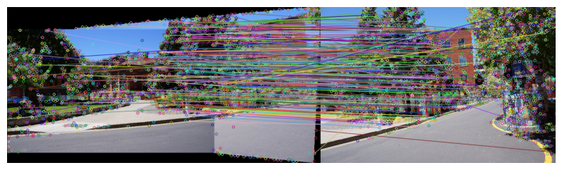

# stitiching aligned_image_2 and image4
aligned_2 = BGR2RGB(aligned_image_2)
aligned_2 = cv2.resize(aligned_2, (1000, 400))
src_pts, dst_pts, matching_result = get_src_dst_points(aligned_2, image4)
show_image(BGR2RGB(matching_result), w=12, h=6)
best_H = ransac_homography(src_pts, dst_pts, n_iter=10000, threshold=0.5)
aligned_image_3 = get_transformed_images(aligned_2, image4, best_H, focus=1, blend=True)
aligned_image_3 = remove_black_background(BGR2RGB(aligned_image_3))
show_image(aligned_image_3, w=12, h=6)
# saving the stitched image
aligned_image_3 = BGR2RGB(aligned_image_3)
cv2.imwrite('Results/scene2/scene2.jpg', aligned_image_3)

TrueScene 3
# creating folder for scene1
if not os.path.exists('Results/scene3'):
os.makedirs('Results/scene3')
# operning the images
image1 = open_resize('Dataset/scene3/I31.jpg', 600, 400)
image2 = open_resize('Dataset/scene3/I32.jpg', 600, 400)
image3 = open_resize('Dataset/scene3/I33.jpg', 600, 400)
image4 = open_resize('Dataset/scene3/I34.jpg', 600, 400)# stitiching image1 and image2
src_pts, dst_pts, matching_result = get_src_dst_points(image1, image2)
show_image(BGR2RGB(matching_result), w=6, h=3)
best_H = ransac_homography(src_pts, dst_pts, n_iter=1000, threshold=0.5)
aligned_image_1 = get_transformed_images(image1, image2, best_H, focus=2, blend=True)
aligned_image_1 = remove_black_background(BGR2RGB(aligned_image_1))
show_image(aligned_image_1, w=6, h=3)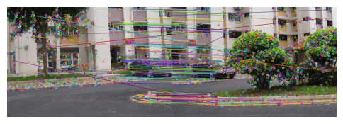

# stitching aligned_image_1 and image3
aligned_1 = BGR2RGB(aligned_image_1)
aligned_1 = cv2.resize(aligned_1, (800, 400))
src_pts, dst_pts, matching_result = get_src_dst_points(aligned_1, image3)
show_image(BGR2RGB(matching_result), w=10, h=5)
best_H = ransac_homography(src_pts, dst_pts, n_iter=10000, threshold=0.5)
aligned_image_2 = get_transformed_images(aligned_1, image3, best_H, focus=2, blend=False)
aligned_image_2 = remove_black_background(BGR2RGB(aligned_image_2))
show_image(aligned_image_2, w=10, h=5)

# stitching aligned_image_2 and image4
aligned_2 = BGR2RGB(aligned_image_2)
aligned_2 = cv2.resize(aligned_2, (1000, 400))
src_pts, dst_pts, matching_result = get_src_dst_points(aligned_2, image4)
show_image(BGR2RGB(matching_result), w=12, h=6)
best_H = ransac_homography(src_pts, dst_pts, n_iter=10000, threshold=0.5)
aligned_image_3 = get_transformed_images(aligned_2, image4, best_H, focus=1, blend=False)
aligned_image_3 = remove_black_background(BGR2RGB(aligned_image_3))
show_image(aligned_image_3, w=12, h=6)
# saving the stitched image
aligned_image_3 = BGR2RGB(aligned_image_3)
cv2.imwrite('Results/scene3/scene3.jpg', aligned_image_3)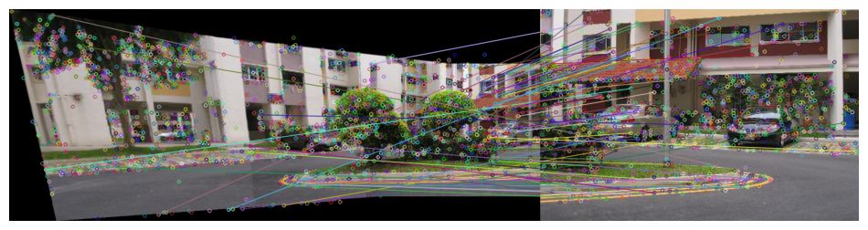
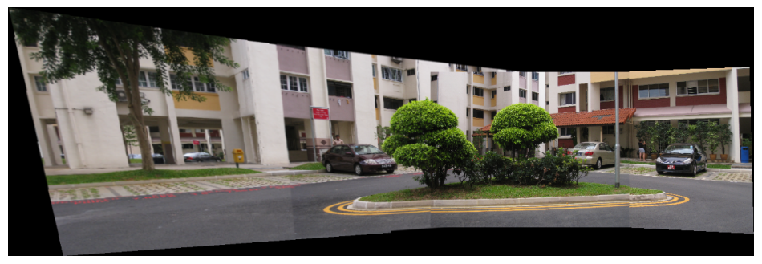
TrueScene 4
# creating folder for scene1
if not os.path.exists('Results/scene4'):
os.makedirs('Results/scene4')
# operning the images
image1 = open_resize('Dataset/scene4/I41.jpg', 600, 400)
image2 = open_resize('Dataset/scene4/I42.jpg', 600, 400)# stitiching image1 and image2
src_pts, dst_pts, matching_result = get_src_dst_points(image1, image2)
show_image(BGR2RGB(matching_result), w=10, h=5)
best_H = ransac_homography(src_pts, dst_pts, n_iter=10000, threshold=0.5)
aligned_image_1 = get_transformed_images(image1, image2, best_H, focus=2, blend=True)
aligned_image_1 = remove_black_background(BGR2RGB(aligned_image_1))
show_image(aligned_image_1, w=10, h=10)
# saving the stitched image
aligned_image_1 = BGR2RGB(aligned_image_1)
cv2.imwrite('Results/scene4/scene4.jpg', aligned_image_1)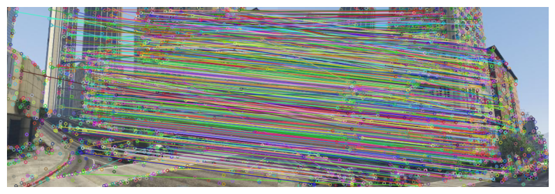

TrueScene 5
# creating folder for scene1
if not os.path.exists('Results/scene5'):
os.makedirs('Results/scene5')
# operning the images
image1 = open_resize('Dataset/scene5/I51.jpg', 600, 400)
image2 = open_resize('Dataset/scene5/I52.jpg', 600, 400)# stitiching image1 and image2
src_pts, dst_pts, matching_result = get_src_dst_points(image1, image2)
show_image(BGR2RGB(matching_result), w=10, h=5)
best_H = ransac_homography(src_pts, dst_pts, n_iter=10000, threshold=0.5)
aligned_image_1 = get_transformed_images(image1, image2, best_H, focus=2, blend=True)
aligned_image_1 = remove_black_background(BGR2RGB(aligned_image_1))
show_image(aligned_image_1, w=10, h=8)
# saving the stitched image
aligned_image_1 = BGR2RGB(aligned_image_1)
cv2.imwrite('Results/scene5/scene5.jpg', aligned_image_1)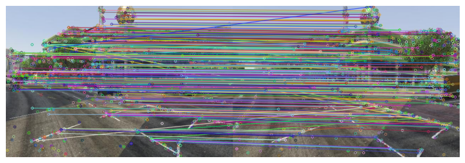

TrueScene 6
# creating folder for scene1
if not os.path.exists('Results/scene6'):
os.makedirs('Results/scene6')
# operning the images
image1 = open_resize('Dataset/scene6/I61.jpg', 600, 400)
image2 = open_resize('Dataset/scene6/I62.jpg', 600, 400)# stitiching image1 and image2
src_pts, dst_pts, matching_result = get_src_dst_points(image1, image2)
show_image(BGR2RGB(matching_result), w=10, h=5)
best_H = ransac_homography(src_pts, dst_pts, n_iter=10000, threshold=5)
aligned_image_1 = get_transformed_images(image1, image2, best_H, focus=2, blend=True)
aligned_image_1 = remove_black_background(BGR2RGB(aligned_image_1))
show_image(aligned_image_1, w=10, h=8)
# saving the stitched image
aligned_image_1 = BGR2RGB(aligned_image_1)
cv2.imwrite('Results/scene6/scene6.jpg', aligned_image_1)

TrueStep 4 Stitch the images used as input in step (3) using in-built command for homography estimation and compare it with the panorama obtained in step (3).
Helper function
# function for finding the best homography matrix using cv2 library
def cv2_get_RANSAC_Homography(src_pts, dst_pts, threshold=5):
H, mask = cv2.findHomography(src_pts, dst_pts, cv2.RANSAC, threshold) # find the best homography matrix
return H # return the best homography matrixScene 1
# operning the images
image1 = open_resize('Dataset/scene1/I11.jpg', 600, 400)
image2 = open_resize('Dataset/scene1/I12.jpg', 600, 400)
image3 = open_resize('Dataset/scene1/I13.jpg', 600, 400)
image4 = open_resize('Dataset/scene1/I14.jpg', 600, 400)# stitiching image1 and image2
src_pts, dst_pts, matching_result = get_src_dst_points(image1, image2)
best_H = cv2_get_RANSAC_Homography(src_pts, dst_pts, threshold=5)
aligned_image_1 = get_transformed_images(image1, image2, best_H, focus=2, blend=True)
aligned_image_1 = remove_black_background(BGR2RGB(aligned_image_1))
show_image(aligned_image_1, w=6, h=3)
# stitiching image3 and image4
src_pts, dst_pts, matching_result = get_src_dst_points(image3, image4)
best_H = cv2_get_RANSAC_Homography(src_pts, dst_pts, threshold=0.5)
aligned_image_2 = get_transformed_images(image3, image4, best_H, focus=1, blend=False)
aligned_image_2 = remove_black_background(BGR2RGB(aligned_image_2))
show_image(aligned_image_2, w=6, h=3)
# stitiching aligned_image_1 and aligned_image_2
aligned_1 = BGR2RGB(aligned_image_1)
aligned_2 = BGR2RGB(aligned_image_2)
aligned_1 = cv2.resize(aligned_1, (800, 400))
aligned_2 = cv2.resize(aligned_2, (800, 400))
src_pts, dst_pts, matching_result = get_src_dst_points(aligned_1, aligned_2)
best_H = cv2_get_RANSAC_Homography(src_pts, dst_pts, threshold=0.5)
aligned_image_3 = get_transformed_images(aligned_1, aligned_2, best_H, focus=2)
aligned_image_3 = remove_black_background(BGR2RGB(aligned_image_3))
show_image(aligned_image_3, w=12, h=6)
# saving the stitched image
aligned_image_3 = BGR2RGB(aligned_image_3)
cv2.imwrite('Results/scene1/scene1_cv2.jpg', aligned_image_3)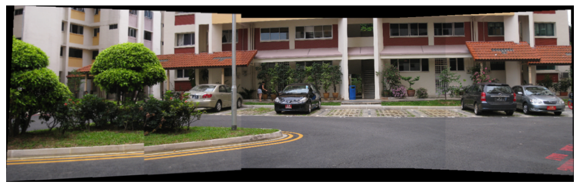
TrueComparing the results of the two methods
custom = cv2.imread('Results/scene1/scene1.jpg')
show_image(BGR2RGB(custom), w=12, h=6, title='Custom Homography and RANSAC')
inbuilt = cv2.imread('Results/scene1/scene1_cv2.jpg')
show_image(BGR2RGB(inbuilt), w=12, h=6, title='Inbuilt Homography and RANSAC')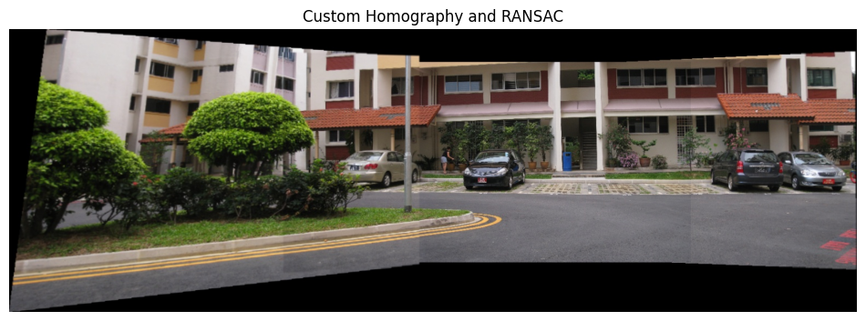

The image obtained through a custom implementation of homography computation and RANSAC looks similar to the image obtained through the built-in function for homography estimation.
Scene 2
# operning the images
image1 = open_resize('Dataset/scene2/I21.jpg', 600, 400)
image2 = open_resize('Dataset/scene2/I22.jpg', 600, 400)
image3 = open_resize('Dataset/scene2/I23.jpg', 600, 400)
image4 = open_resize('Dataset/scene2/I24.jpg', 600, 400)# stitiching image1 and image2
src_pts, dst_pts, matching_result = get_src_dst_points(image1, image2)
best_H = cv2_get_RANSAC_Homography(src_pts, dst_pts, threshold=0.5)
aligned_image_1 = get_transformed_images(image1, image2, best_H, focus=1, blend=True)
aligned_image_1 = remove_black_background(BGR2RGB(aligned_image_1))
show_image(aligned_image_1, w=6, h=3)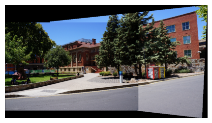
# stitiching aligned_image_1 and image3
aligned_1 = BGR2RGB(aligned_image_1)
aligned_1 = cv2.resize(aligned_1, (800, 400))
src_pts, dst_pts, matching_result = get_src_dst_points(aligned_1, image3)
best_H = cv2_get_RANSAC_Homography(src_pts, dst_pts, threshold=5)
aligned_image_2 = get_transformed_images(aligned_1, image3, best_H, focus=2, blend=False)
aligned_image_2 = remove_black_background(BGR2RGB(aligned_image_2))
show_image(aligned_image_2, w=10, h=5)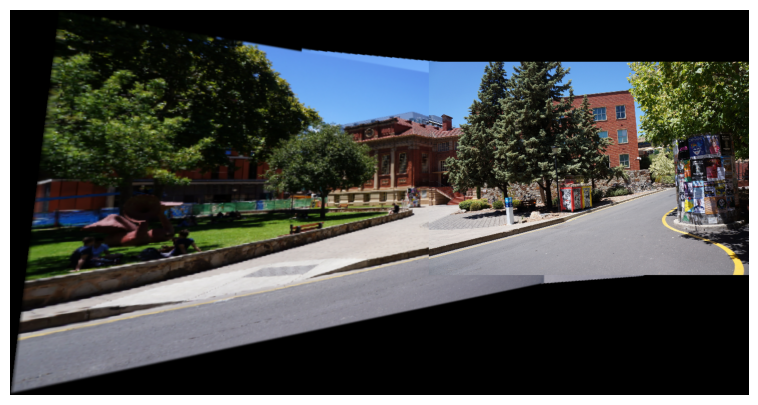
# stitiching aligned_image_2 and image4
aligned_2 = BGR2RGB(aligned_image_2)
aligned_2 = cv2.resize(aligned_2, (1000, 400))
src_pts, dst_pts, matching_result = get_src_dst_points(aligned_2, image4)
best_H = cv2_get_RANSAC_Homography(src_pts, dst_pts, threshold=0.5)
aligned_image_3 = get_transformed_images(aligned_2, image4, best_H, focus=1, blend=True)
aligned_image_3 = remove_black_background(BGR2RGB(aligned_image_3))
show_image(aligned_image_3, w=12, h=6)
# saving the stitched image
aligned_image_3 = BGR2RGB(aligned_image_3)
cv2.imwrite('Results/scene2/scene2_cv2.jpg', aligned_image_3)
TrueComparing the results of the two methods
custom = cv2.imread('Results/scene2/scene2.jpg')
show_image(BGR2RGB(custom), w=12, h=6, title='Custom Homography and RANSAC')
inbuilt = cv2.imread('Results/scene2/scene2_cv2.jpg')
show_image(BGR2RGB(inbuilt), w=12, h=6, title='Inbuilt Homography and RANSAC')
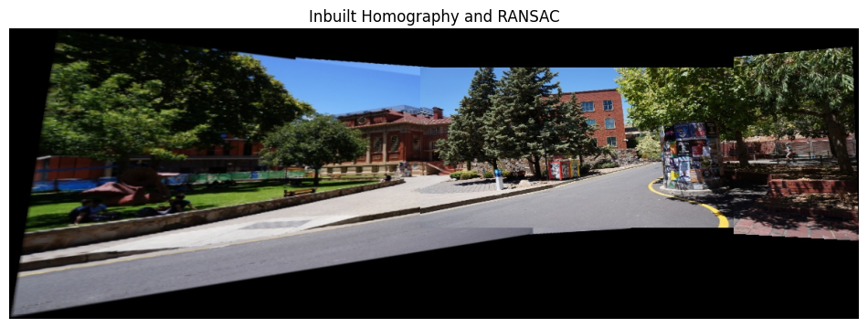
The image obtained through a custom implementation of homography computation and RANSAC looks similar to the image obtained through the built-in function for homography estimation.
Scene 3
# operning the images
image1 = open_resize('Dataset/scene3/I31.jpg', 600, 400)
image2 = open_resize('Dataset/scene3/I32.jpg', 600, 400)
image3 = open_resize('Dataset/scene3/I33.jpg', 600, 400)
image4 = open_resize('Dataset/scene3/I34.jpg', 600, 400)# stitiching image1 and image2
src_pts, dst_pts, matching_result = get_src_dst_points(image1, image2)
best_H = cv2_get_RANSAC_Homography(src_pts, dst_pts, threshold=0.5)
aligned_image_1 = get_transformed_images(image1, image2, best_H, focus=2, blend=True)
aligned_image_1 = remove_black_background(BGR2RGB(aligned_image_1))
show_image(aligned_image_1, w=6, h=3)
# stitching aligned_image_1 and image3
aligned_1 = BGR2RGB(aligned_image_1)
aligned_1 = cv2.resize(aligned_1, (800, 400))
src_pts, dst_pts, matching_result = get_src_dst_points(aligned_1, image3)
best_H = cv2_get_RANSAC_Homography(src_pts, dst_pts, threshold=2)
aligned_image_2 = get_transformed_images(aligned_1, image3, best_H, focus=2, blend=False)
aligned_image_2 = remove_black_background(BGR2RGB(aligned_image_2))
show_image(aligned_image_2, w=10, h=5)
# stitching aligned_image_2 and image4
aligned_2 = BGR2RGB(aligned_image_2)
aligned_2 = cv2.resize(aligned_2, (1000, 400))
src_pts, dst_pts, matching_result = get_src_dst_points(aligned_2, image4)
best_H = cv2_get_RANSAC_Homography(src_pts, dst_pts, threshold=0.5)
aligned_image_3 = get_transformed_images(aligned_2, image4, best_H, focus=1, blend=False)
aligned_image_3 = remove_black_background(BGR2RGB(aligned_image_3))
show_image(aligned_image_3, w=12, h=6)
# saving the stitched image
aligned_image_3 = BGR2RGB(aligned_image_3)
cv2.imwrite('Results/scene3/scene3_cv2.jpg', aligned_image_3)
TrueComparing the results of the two methods
custom = cv2.imread('Results/scene3/scene3.jpg')
show_image(BGR2RGB(custom), w=12, h=6, title='Custom Homography and RANSAC')
inbuilt = cv2.imread('Results/scene3/scene3_cv2.jpg')
show_image(BGR2RGB(inbuilt), w=12, h=6, title='Inbuilt Homography and RANSAC')

The image obtained through a custom implementation of homography computation and RANSAC looks similar to the image obtained through the built-in function for homography estimation.
Scene 4
# operning the images
image1 = open_resize('Dataset/scene4/I41.jpg', 600, 400)
image2 = open_resize('Dataset/scene4/I42.jpg', 600, 400)# stitiching image1 and image2
src_pts, dst_pts, matching_result = get_src_dst_points(image1, image2)
best_H = cv2_get_RANSAC_Homography(src_pts, dst_pts, threshold=0.5)
aligned_image_1 = get_transformed_images(image1, image2, best_H, focus=2, blend=True)
aligned_image_1 = remove_black_background(BGR2RGB(aligned_image_1))
show_image(aligned_image_1, w=10, h=10)
# saving the stitched image
aligned_image_1 = BGR2RGB(aligned_image_1)
cv2.imwrite('Results/scene4/scene4_cv2.jpg', aligned_image_1)
TrueComparing the results of the two methods
custom = cv2.imread('Results/scene4/scene4.jpg')
show_image(BGR2RGB(custom), w=12, h=6, title='Custom Homography and RANSAC')
inbuilt = cv2.imread('Results/scene4/scene4_cv2.jpg')
show_image(BGR2RGB(inbuilt), w=12, h=6, title='Inbuilt Homography and RANSAC')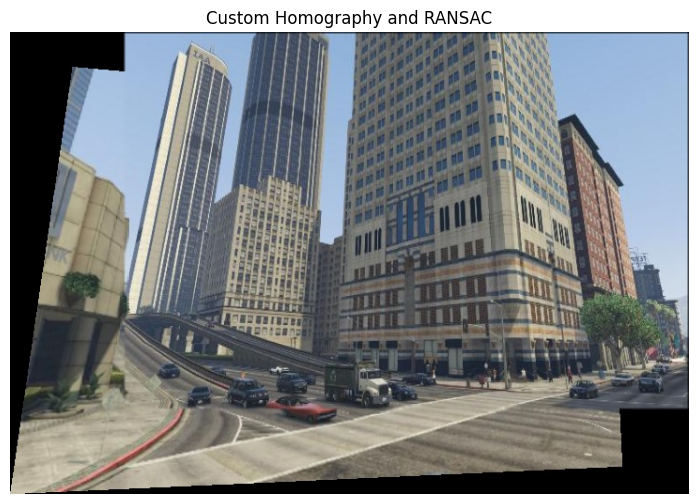

The image obtained through a custom implementation of homography computation and RANSAC looks similar to the image obtained through the built-in function for homography estimation.
Scene 5
# operning the images
image1 = open_resize('Dataset/scene5/I51.jpg', 600, 400)
image2 = open_resize('Dataset/scene5/I52.jpg', 600, 400)# stitiching image1 and image2
src_pts, dst_pts, matching_result = get_src_dst_points(image1, image2)
best_H = cv2_get_RANSAC_Homography(src_pts, dst_pts, threshold=0.5)
aligned_image_1 = get_transformed_images(image1, image2, best_H, focus=2, blend=True)
aligned_image_1 = remove_black_background(BGR2RGB(aligned_image_1))
show_image(aligned_image_1, w=10, h=8)
# saving the stitched image
aligned_image_1 = BGR2RGB(aligned_image_1)
cv2.imwrite('Results/scene5/scene5_cv2.jpg', aligned_image_1)
TrueComparing the results of the two methods
custom = cv2.imread('Results/scene5/scene5.jpg')
show_image(BGR2RGB(custom), w=12, h=6, title='Custom Homography and RANSAC')
inbuilt = cv2.imread('Results/scene5/scene5_cv2.jpg')
show_image(BGR2RGB(inbuilt), w=12, h=6, title='Inbuilt Homography and RANSAC')

The image obtained through a custom implementation of homography computation and RANSAC looks similar to the image obtained through the built-in function for homography estimation.
Scene 6
# operning the images
image1 = open_resize('Dataset/scene6/I61.jpg', 600, 400)
image2 = open_resize('Dataset/scene6/I62.jpg', 600, 400)# stitiching image1 and image2
src_pts, dst_pts, matching_result = get_src_dst_points(image1, image2)
best_H = cv2_get_RANSAC_Homography(src_pts, dst_pts, threshold=5)
aligned_image_1 = get_transformed_images(image1, image2, best_H, focus=2, blend=True)
aligned_image_1 = remove_black_background(BGR2RGB(aligned_image_1))
show_image(aligned_image_1, w=10, h=8)
# saving the stitched image
aligned_image_1 = BGR2RGB(aligned_image_1)
cv2.imwrite('Results/scene6/scene6_cv2.jpg', aligned_image_1)
TrueComparing the results of the two methods
custom = cv2.imread('Results/scene6/scene6.jpg')
show_image(BGR2RGB(custom), w=12, h=6, title='Custom Homography and RANSAC')
inbuilt = cv2.imread('Results/scene6/scene6_cv2.jpg')
show_image(BGR2RGB(inbuilt), w=12, h=6, title='Inbuilt Homography and RANSAC')

The image obtained through a custom implementation of homography computation and RANSAC looks similar to the image obtained through the built-in function for homography estimation.
References
- Image stitching, https://en.wikipedia.org/wiki/Image_stitching
- Perspective Transformation, https://www.tutorialspoint.com/dip/perspective_transformation.htm
- First Principles of Computer Vision, Columbia Engineering, https://fpcv.cs.columbia.edu
- Feature Based Panoramic Image Stitching, https://in.mathworks.com/help/vision/ug/feature-based-panoramic-image-stitching.html